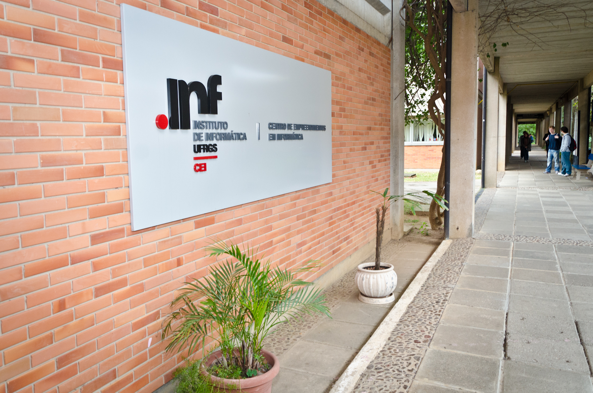
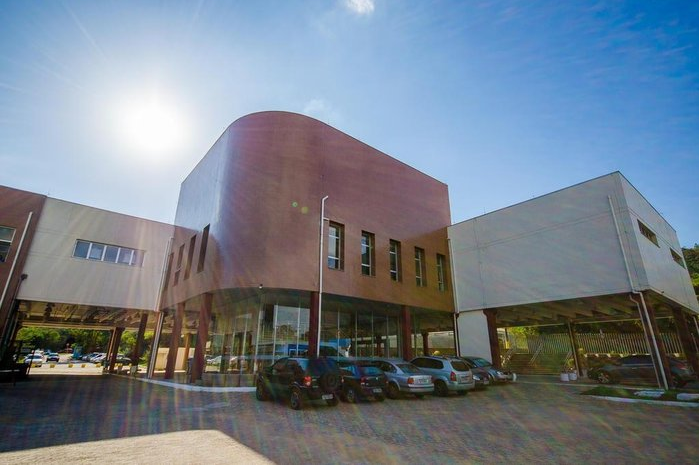
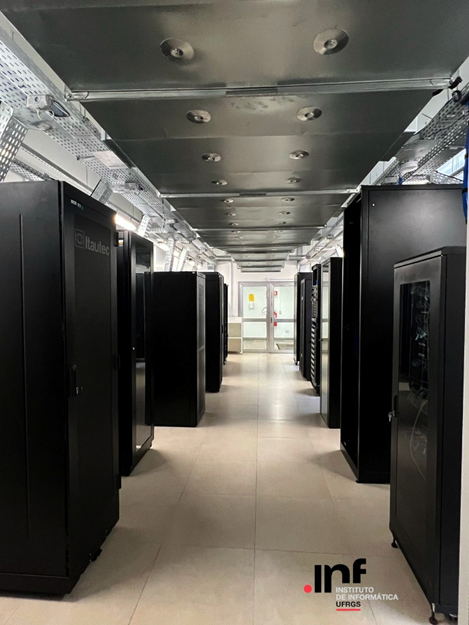
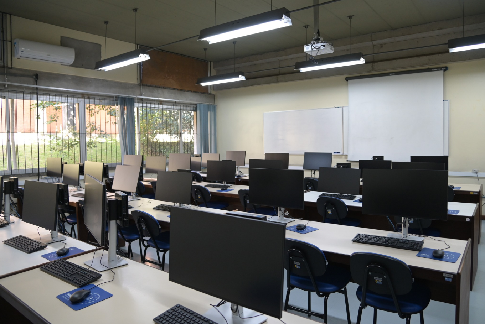

// O Curso
A partir do semestre 2026/1, o curso de Ciência da Computação da UFRGS recebe uma atualização significativa de Currículo! Modernizamos a arquitetura pedagógica para alinhar-se às demandas atuais de Engenharia de Software, IA e Inovação.
Veja as principais mudanças que realizamos para que vocês tenham uma das mais modernas experiências com a Computação no país:
O currículo expandiu o núcleo obrigatório para fortalecer a base e a prática profissional desde o início:
- Introdução à Ciência da Computação (Etapa 1): Visão geral da carreira, ética, ferramentas essenciais (Git, Linux, LaTeX) e impacto da computação.
- Teste e Verificação de Software (Etapa 2): Foco antecipado em qualidade, validação e verificação formal de software.
- Projeto de Circuitos Digitais (Etapa 3): Aprofundamento em hardware, incluindo síntese lógica e linguagens de descrição de hardware (Verilog/VHDL).
- Projeto em Ciência e Inovação (Etapa 5): Uma atividade integradora massiva (120h) focada em método científico, pesquisa e inovação tecnológica.
Módulos antigos foram atualizadas para versões completamente modernas:
- Pensamento Computacional: Substitui "Fundamentos de Algoritmos", focando em paradigmas funcionais e resolução de problemas.
- Algoritmos e Programação: Atualizada para incluir ponteiros, depuração e alocação dinâmica desde o início.
- Visão Computacional e Computação Gráfica: Disciplinas modernizadas para incluir tecnologias atuais como renderização baseada em física e modelos de aprendizado profundo.
- Exclusões: Disciplinas como "Compiladores" (a antiga obrigatória) e "Teoria dos Grafos" foram reorganizadas ou absorvidas por novas estruturas como "Linguagens de Programação I e II" e "Projeto e Análise de Algoritmos I".
Houve um ajuste no balanceamento entre disciplinas obrigatórias e eletivas para garantir uma formação mais sólida:
- Carga Obrigatória: Aumentou para 166 créditos (antes 152).
- Carga Eletiva: Ajustada para 16 créditos, permitindo especialização focada.
- Total do Curso: ~3400 horas.
- A alteração será implementada para todos os alunos ativos do curso. Uma tabela de liberação (equivalência) foi criada para garantir que créditos de disciplinas antigas (como "Redes N" ou "Arquitetura I") sejam aproveitados nas novas estruturas.
// Lab_Surveillance (Infrastructure)




// Ecossistema
A sala de aula é apenas o main(). O verdadeiro processamento acontece nos laboratórios e incubadoras.
- CEI StartupsIncubadora de empresas de base tecnológica. Onde nascem os unicórnios.
- Pesquisa e ExtensãoAproveite diversas oportunidades oferecidas para os alunos em projetos que atuam no desenvolvimento de novas tecnologias relevantes à sociedade.
- PPCGApós a graduação, a UFRGS oferece um dos mais reconhecidos Programa de Pós-Graduação em Computação do mundo, com reconhecimento internacional.
// Currículo completo
Clique nas cadeiras para ver as liberações e os pré-requisitos delas.
[Etapa_01]
[Etapa_02]
[Etapa_03]
[Etapa_04]
[Etapa_05]
[Etapa_06]
[Etapa_07]
[Etapa_08]
[Etapa_09]
// FAQ (Dúvidas Frequentes)
Erro: Não sei se sou bom em matemática
Calma. o curso começa do zero em Pré-Cálculo, caso precise. O pensamento computacional é mais sobre lógica, que será trabalhada e desenvolvida ao longo do curso, do que apenas contas.
Query: "O mercado está saturado?"
Não. Faltam profissionais capazes de lidar com arquiteturas complexas. A UFRGS é uma das principais e mais renomadas universidades responsáveis pela formação dos mais qualificados Cientistas da Computação do país. Para esses indivíduos, dificilmente faltarão oportunidades.
Config: "Qual a diferença para Eng. de Computação?"
Ciência foca no Software, Algoritmos e Dados. Engenharia foca no Hardware, Robótica e Eletrônica.